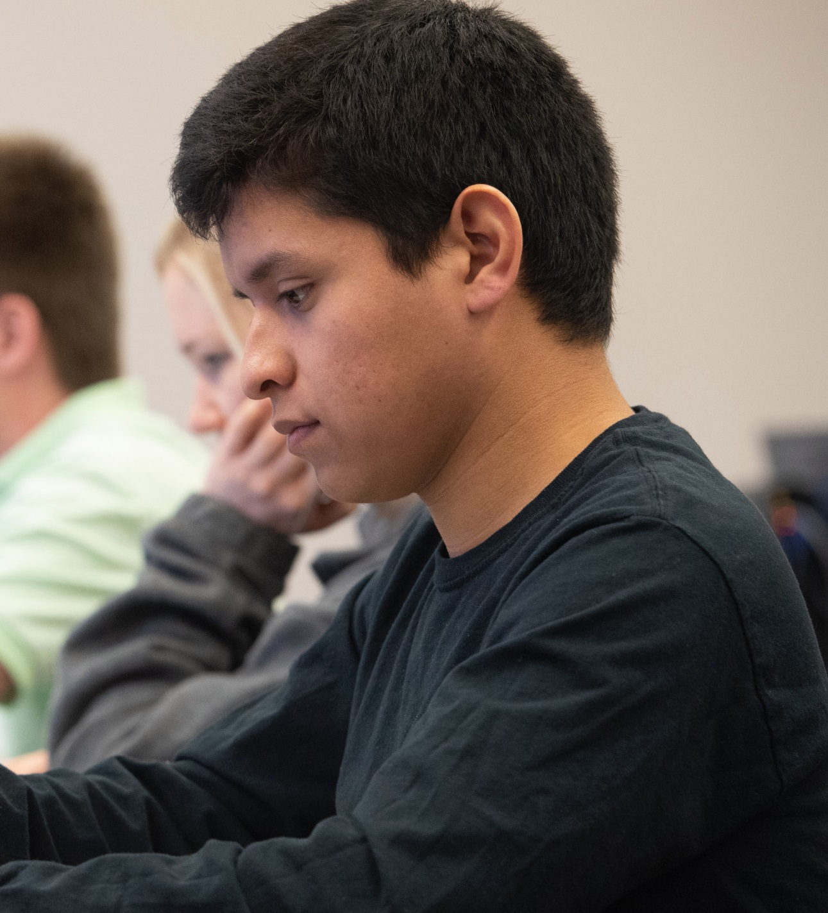
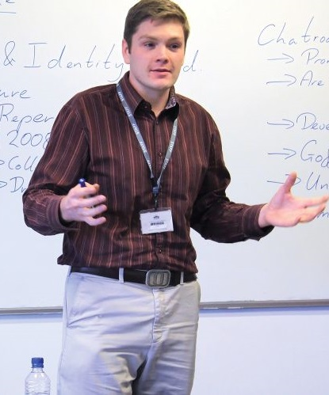

Developing expertise and empowering teachers and school leaders to create
better education outcomes for Our Students. We believe that student learning
comes first. We are committed to improving teacher expertise.
Our Vision is to provide high quality education system in which teachers
have the greatest impact on the educational growth and achievement of every
learner. We provide with feedback so that the teachers can improve and have
maximum impact on learning.
We even help the educator by keeping the records of their paper published
Conferences attended and Conducted. We encourage the use of ICTs to improve
learning.
The performance of teachers will be observed by Principal giving remarks.
We collect all the data and use it to calculate The Performance of teacher.
We believe that competition is the best way to improve.
CONTACT US ON